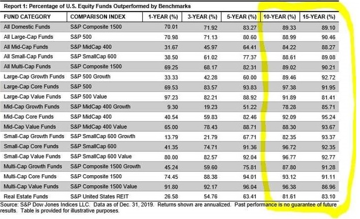

התכנים בפוסט זה, כמו כל שאר התכנים בבלוג, הינם תכנים לימודיים במהותם, הם אינם מהווים ייעוץ או המלצה לביצוע פעולה בנייר ערך, ואין לראות בהם תחליף לייעוץ השקעות ו/או ייעוץ פנסיוני המתחשב בצרכיו הייחודיים של כל אדם.
1. מחקרים רבים, למשל כאלה של Bogle Financial Research Center, The Vanguard Group, Standard & Poor’s וגופי מחקר אחרים, הראו שבפרקי זמן של עד עשור יותר מ-70% מהקרנות המנוהלות לא הניבו תשואה גבוהה מהמדד (אבל כמובן שגבו דמי ניהול גבוהים על מומחיותם הרבה).
הנה למשל דוגמא מתוך אתר גמל-נט של משרד האוצר, שבה לקחתי את ה-top20 של כל הקופות והקרנות במסלול מנייתי בתקופה של כ-6 שנים (2014-2019), ומיינתי את התוצאות לפי התשואה המצטברת לכל התקופה.

ניתן לראות כי שתי המובילות הן קרן ההשתלמות וקופת הגמל של הלמן אלדובי, אבל לא בגלל שהלמן אלדובי כ"כ מוצלחים, אלא בגלל שהם במסלול מחקה מדד S&P 500. המסלולים מחקי המדד פשוט "השאירו אבק" לכל הקרנות והקופות המנוהלות, כאשר הקרנות בתחתית הרשימה השיגו תשואה נמוכה כמעט במחצית בהשוואה למדד. חשוב להדגיש שהתוצאות הן לפני התחשבות בדמי הניהול הגבוהים יותר בקרנות המנוהלות, וכי קיימות עוד עשרות קרנות מנייתיות שכלל לא הכנסתי לתמונה והשיגו תשואות נמוכה משמעותית.
2. אבל רגע, אם נבחן למי יש track record מוצלח נוכל לבחור מישהו מה-30% המוצלחים, נכון? לא נכון. מחקרים ארוכי טווח הראו שהקרנות המוצלחות יותר בעשור מסויים היו ממש גרועות בעשור העוקב (גרועות גם מהמדד וגם מהמתחרים). סטטיסטית תמיד יש כאלה שיצליחו יותר מהממוצע מסיבות של מזל בלבד. הסיבה שביצועיהם גרועים יותר בהמשך הדרך היא שטבעה של הסטטיסטיקה להתיישר לכיוון הממוצע.
למעשה, מחקר מ-2016 הראה שבחירת הקרנות המוצלחות יותר בשנים האחרונות הניבה תוצאה גרועה יותר בשנים העוקבות בהשוואה לבחירה מכוונת של הקרנות הגרועות יותר בשנים האחרונות, כלומר חל היפוך מגמה. למען האמת, המסקנה הסטטיסטית היא שפשוט אין שום קורלציה בין תשואות העבר של גופים מסוימים לתשואות העתיד, ובחירת גוף מנהל ע"ס תוצאות העבר אינה טובה יותר מבחירת גוף מנהל ע"ס צבע הלוגו שלו.
בנוסף, כאשר מחלקים את הקרנות לפי אפיקי השקעה, הנתונים מראים שכ-90% מהקרנות פיגרו אחרי המדדים הרלוונטיים ב-10 וב-15 השנים האחרונות.

3. אבל מה לגבי מנהלי השקעות אגדיים שמכים את השוק בעקביות לאורך עשרות שנים, וורן באפט, למשל? קודם כל, אין כמעט כאלה יחידי סגולה. מחקר מ-2010 של זוכי פרס נובל יוג'ין פאמה וקנת' פרנץ' הראה שרק כ-2% מהקרנות השיגו לאורך זמן תשואה עודפת מעל השוק שבכלל הצדיקה את דמי הניהול שלהם. בפועל, אין לנו שום אפשרות מעשית לזהות את אותם סופרסטארים מבעוד מועד לפני שיפרשו, יחליפו תפקיד או יילכו לעולמם. כי אם נסתמך על שנים ספורות – ככל הנראה בשנים העוקבות הביצועים יהיו חלשים יותר. בנוסף, גם אם אכן הימרנו על אחד מאותם יחידי סגולה, אחרי שהראה שנים רבות של הצלחות הקרן שלו בוודאי גייסה כספים רבים של משקיעים, ואיבדה את "יתרון הקוטן" – כשמנהלים עשרות מיליונים קל יותר לזהות הזדמנויות שישפיעו משמעותית על התשואה, אבל קשה מאוד למצוא מספיק הזדמנויות כאלה כשמנהלים עשרות מיליארדים.
4. הם מאוד יקרים, עם דמי ניהול שנתיים שמגיעים לעיתים לכ-2% ויותר. להכות את המדד בצורה עקבית לאורך שנים רבות זה כמעט בלתי אפשרי, אז מה הסיכוי להכות אותו כל שנה כשהמדד מתחיל ביתרון בגובה דמי הניהול? הנתונים מראים שזה כמעט בלתי אפשרי לעשות זאת לאורך זמן.
אז מה המסקנה? השקעה בקרן פאסיבית, מחקת מדד, בדמי ניהול נמוכים עד אפסיים. זה משיג בדיוק את התשואה הממוצעת, זה משעמם, אבל זה עובד.
רוצים ללמוד על הנושא יותר לעומק, עם כל המחקרים והנתונים החשובים בתחום, ב-20 פוסטים קלים לקריאה שאפשר לסיים בשקיקה? היכנסו למדריך המיוחד "כל האמת על השקעות מנוהלות".
רוצה לקבל סוף כל סוף את כל הכלים והידע הפרקטי כדי להשקיע בקלות וביעילות את כספיך וחסכונותיך? לחץ/י כאן כדי לראות את שירותי ההדרכה והסיוע במימוש השקעות פאסיביות שאנחנו מציעים.